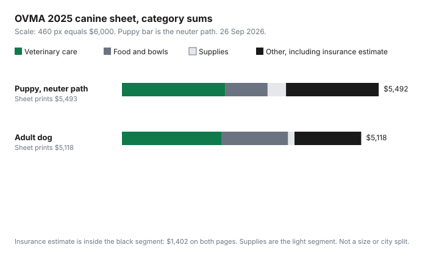

Pets · Canada
What a Dog Really Costs in Canada: First-Year and Annual Budgets Using 2025 Vet Association Numbers
Food is the line new owners write down. The first year also contains a surgery, a set of vaccines, a microchip, a crate, a training class, and a pet-insurance estimate, and the adult year replaces some of those with dental work and a larger food line. The figures below are printed on the Ontario Veterinary Medical Association’s 2025 canine cost-of-care sheet, opened as a PDF on 26 Sep 2026. They are a provincial average. They exclude what you pay to buy or adopt the dog. They are not a quote from your clinic, and they are not a national census. Education only, not veterinary or insurance advice.
Key takeaways
- The sheet prints a puppy’s first year at $5,493 with the neuter line or $5,595 with the spay line, and an adult dog at $5,118 a year. Purchase or adoption is not on either page.
- Adding the printed line items comes to $5,492 and $5,594 for the puppy, one dollar under the totals on the sheet, and to $5,118 exactly for the adult dog. The chart uses the line-item sums. The table shows both.
- The largest puppy clinical line is neuter/spay at $1,016 or $1,118. The largest adult clinical line is professional dental care at $1,320. Pet insurance is estimated at $1,402 on both pages, with a note that it depends on the pet and the policy.
- Grooming and boarding are not lines on the sheet. Neither is a size, breed, or city table. Those swings stay as quotes, not as dollars invented here.
- Spreading the adult total across twelve months is $426.50. That is arithmetic on the Ontario average, parked with the same method as any other sinking fund.
The OVMA 2025 cost-of-care numbers: about $5,500 for a puppy's first year and about $5,100 a year for an adult dog (excluding purchase)
The PDF is two pages. Page one is “Annual cost of owning a puppy.” Page two is “Annual cost of owning a dog.” Both say the figures are an estimate, that pet insurance depends on the pet, the policy, and other coverage choices, and that the costs are a provincial average that may vary, with other expenses possible. The puppy total is printed as $5,493/$5,595. The adult total is printed as $5,118. Nothing on either page is a breeder fee or an adoption fee. If someone quotes you “about $5,500 in the first year,” ask whether they have already added the dog. This sheet has not.
Do not import a U.S. shelter poster into this budget. The sheet is Ontario. A clinic in another province can sit above or below every line, and this PDF does not print those provinces. The cat sheet from the same association is the comparison if you are choosing a species, not a second dog total. Where you live also changes the lease. A pet damage deposit question in British Columbia, an Ontario tenant-fee rule, and Quebec’s rule against a security deposit are three different housing pages: B.C. deposits, the Ontario fee checklist, and Quebec’s no-deposit rule. None of those housing rules is a line on the veterinary sheet.
Line by line: food, vet and preventives, insurance, grooming, licensing, supplies, boarding
Food on the puppy page is $866, plus bowls at $44. Food on the adult page is $1,418, and bowls are not repeated. That is the sheet’s own life-stage change, not a guess about bag size. How to compare a bag on cost per day, once you are buying food, is the unit-price method. Do not treat $866 or $1,418 as the price of a particular brand.
Veterinary care and preventives on the puppy page are parasite prevention $189, exams with vaccines $642, deworming medication $91, fecal exams $131, microchip $137, and neuter/spay $1,016 or $1,118. On the adult page they are parasite prevention $238, exams with vaccines $214, heartworm/Lyme test $125, fecal exams $66, wellness profile blood work $174, and professional dental care $1,320. Insurance is not inside those clinical lines. It sits under other expenses at $1,402 on both pages, starred as an estimate. Whether that premium is the right tool is a separate decision on the premium-versus-fund guide. The licence line is $25 on both pages. That is what the sheet printed, not a survey of every municipality. Confirm the fee where you register the dog.
Supplies on the puppy page are collar and leash $55, bed $78, toys $83, and crate $178. The adult page keeps a collar at $54 and toys at $82. Grooming is not a line. Boarding is not a line. Obedience classes are, at $555, on the puppy page only. If you need a groomer or a kennel, ask those businesses for a quote and add it beside the sheet. Leaving them off is not a claim that they cost nothing. It is a refusal to invent a number the PDF does not contain. An itemized clinic estimate, when you want one, is the vet-bill guide.
| Line | Puppy first year | Adult dog, annual | Ways to trim |
|---|---|---|---|
| Parasite prevention | $189 | $238 | Ask for a written prescription and compare the fill. See pet medications. |
| Exams with vaccines | $642 | $214 | Ask for an itemized estimate before you add extras. See vet bills. |
| Deworming medication | $91 | Not a separate adult line | Same prescription question as other medication. |
| Fecal exams | $131 | $66 | A clinical line. Do not skip it to hit a round number. |
| Microchip | $137 | Not repeated | One-time on this sheet. Confirm the dog does not already have one. |
| Neuter/spay | $1,016 / $1,118 | Not on the adult page | Ask the shelter if adoption already includes it. No adoption fee was on this PDF. |
| Heartworm/Lyme test | Not on the puppy page | $125 | A clinical line on the adult page. Your clinic’s protocol is the vet’s. |
| Wellness profile (blood work) | Not on the puppy page | $174 | Ask what the panel is for before you treat it as automatic. |
| Professional dental care | Not on the puppy page | $1,320 | Ask for an itemized dental estimate. It is the largest adult clinical line on the sheet. |
| Food | $866 | $1,418 | Compare cost per day, not price per bag. See pet food. |
| Bowls | $44 | Not repeated | Buy once. |
| Collar and leash / collar | $55 | $54 | Replace when they fail, not on a calendar. |
| Bed | $78 | Not repeated | A first-year supply on this sheet. |
| Toys | $83 | $82 | The sheet barely changes this line. A cheaper toy that is unsafe is not a trim. |
| Crate | $178 | Not repeated | One-time on the puppy page. |
| Obedience classes | $555 | Not on the adult page | Ask what the quoted course includes. Do not drop training to make the first year look like the adult year. |
| Licence | $25 | $25 | Confirm the municipal fee. The sheet’s $25 is not every city. |
| Pet insurance (estimate) | $1,402 | $1,402 | Read the contract, or fund the risk on purpose. See pet insurance and how to read a policy. |
| Grooming | Not on the sheet | Not on the sheet | Ask a groomer for a quote. No figure is printed here. |
| Boarding | Not on the sheet | Not on the sheet | Ask a kennel or sitter for a quote. No figure is printed here. |
| Printed total | $5,493 / $5,595 | $5,118 | Excludes buying or adopting the dog. |

Where the big swings come from: size, breed, age and location
The sheet does not print a small-dog column and a giant-dog column. It does not print breeds. It does not print Toronto versus Thunder Bay. The sentence it does print is that these are a provincial average and that costs may vary. Size, breed, and city are real reasons a quote will move, and they are not numbers this page can fill in without inventing them. The insurance star is the sheet’s own warning that the $1,402 moves with the pet and the policy. Age shows up as two different pages, puppy and adult, not as a senior multiplier. Food is the life-stage swing that is actually printed: $866 in the first year and $1,418 for the adult dog on this sheet.
Location, for this PDF, means Ontario. Using the total in another province is a starting sketch, then a local quote. Housing rules also swing the first month: read the deposit and fee guides above before you add a pet to a lease, and the tenant-insurance guide if the lease asks for liability cover. That policy is not the pet-insurance line on the OVMA sheet.
One-time costs: spay/neuter, microchip, crate, training
Four lines sit on the puppy page and not on the adult page: neuter/spay $1,016 or $1,118, microchip $137, crate $178, and obedience classes $555. Bowls at $44 and the bed at $78 are also absent from the adult page. Together, the four named one-time lines are $1,886 on the neuter path or $1,988 on the spay path, before bowls and the bed. That arithmetic is why a first year is not “the annual cost plus a bit of food.” An adult dog adopted already altered, chipped, and house-trained does not automatically get to delete those dollars from a budget you have not checked. Ask the shelter what is already done. The adoption fee itself was not on this PDF, so it is not added here.
Training at $555 is on the sheet as obedience classes. Cutting it to make the puppy look as cheap as a spreadsheet wants is cutting care, which is the thing the last section refuses to do. Compare what the course includes. Do not replace the line with zero unless you have a plan you will actually follow.
Building a monthly pet sinking fund, with a worked example
The adult total is the cleaner monthly number because it is the repeating year. $5,118 divided by 12 is $426.50. Set that aside every month, in an account you do not spend on ordinary groceries, and the Ontario average is funded by the time the dental line or the insurance draft arrives. The puppy year is lumpier. $5,493 divided by 12 is $457.75, and $5,595 divided by 12 is $466.25, but the surgery and the class are not spread evenly across the months. If the neuter is booked in month four, the fund has to be ahead of $426.50 by then, or you are borrowing from another envelope. The zero-based budget guide is where that envelope gets a name. The high-interest savings guide is where the cash sits. Neither guide knows your dog.
This $426.50 is not a personal budget until you add the lines the sheet skipped. Write grooming, boarding, and the purchase or adoption fee underneath it in pencil. If those quotes are $0 because you do not board and you adopted for a fee you have already paid, say so. If they are not $0, the Ontario average understates your year on purpose.
Ten ways to trim the budget without cutting care
Trim means a lower price for the same job, or not buying a second copy of something you already own. It does not mean skipping the fecal exam or the dental estimate to protect a round number.
- Compare food on cost per day, using the calorie line, before you celebrate a cheaper bag. The method is the pet-food guide.
- Treat the $1,402 insurance estimate as a decision, not a tax. Price a policy against a fund you will actually hold, using the insurance guide.
- Read exclusions before you count the premium as protection. The policy guide is the clause list.
- Ask for an itemized estimate when a visit grows past the wellness lines on this sheet.
- Ask for a written prescription when a medication can be filled somewhere other than the clinic, and compare the total. Ontario’s rule is on the medications guide. Other provinces go through their own college.
- Confirm the licence fee in your municipality. Do not assume the sheet’s $25 is your invoice.
- Ask an adoption group whether neuter, spay, and a microchip are already done. Do not pay the puppy lines twice, and do not invent the group’s fee.
- Buy the crate, bed, and bowls once. The adult page already drops them.
- Keep the obedience line until you have compared the course, not until the total looks kinder.
- Get a written quote for grooming and boarding instead of using a national rumour. They are blank on this sheet because they were not printed, not because they are free.
Sources & date stamps
- Ontario Veterinary Medical Association, Cost of Care Canine 2025 PDF, opened 26 Sep 2026. Puppy and adult line items and printed totals as in the table. The sheet says the figures are a provincial average and that insurance depends on the pet, the policy, and coverage choices. Purchase price is not on the PDF.
- Line-item addition: puppy neuter path $5,492 and spay path $5,594, one dollar under the printed $5,493/$5,595. Adult lines add to the printed $5,118. Monthly adult figure $5,118 ÷ 12 = $426.50.
- Grooming, boarding, size, breed, and city splits: not printed. Dropped rather than estimated. No U.S. cost-of-care poster is used.
Frequently asked questions
How much does a dog cost in the first year in Canada?
On the Ontario Veterinary Medical Association’s 2025 canine sheet, opened 26 Sep 2026, a puppy’s first year is printed at $5,493 with the neuter line or $5,595 with the spay line. The line items add to one dollar less. The sheet calls this a provincial average, not a national quote, and it does not include buying or adopting the dog. Grooming and boarding are not on the page. Add those only from a quote.
How much does a dog cost per year after that?
The same PDF prints $5,118 for an adult dog. The lines add to that total exactly. Professional dental care is $1,320 and food is $1,418. Insurance is again estimated at $1,402. The adult page does not repeat the microchip, crate, surgery, or obedience class. Your second year is this sheet only if your dog matches the average the association used, which the PDF does not break out by size or city.
Do the OVMA numbers include buying or adopting?
No. Neither page of the 2025 canine PDF has a breeder fee or an adoption fee. The totals are care, food, supplies, a licence, and an insurance estimate. Ask the seller or the shelter for their fee, and ask what surgery and microchip work is already included, before you add the puppy lines on top.
What costs vary most by dog size?
The 2025 sheet does not say. It prints one provincial average and a note that costs may vary. It does not split food, dental, or insurance by weight or breed. The insurance footnote says that estimate depends on the pet and the policy. A larger food bill or a breed-related premium is a quote you collect, not a delta this page can print. Food does change from $866 in the puppy year to $1,418 on the adult page, which is a life-stage line, not a size table.
How much should I save each month for a dog?
Dividing the adult sheet’s $5,118 by 12 gives $426.50 a month. That spreads the Ontario average. It is not your budget until you add grooming, boarding, and any purchase fee the PDF left out. The puppy totals divided by 12 are $457.75 or $466.25, and the surgery will not wait for month twelve. Park the cash the way you park any other annual bill, and confirm the care plan with your vet rather than treating the average as an instruction.